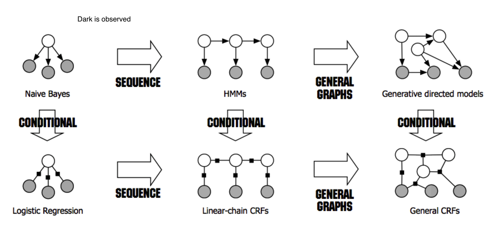
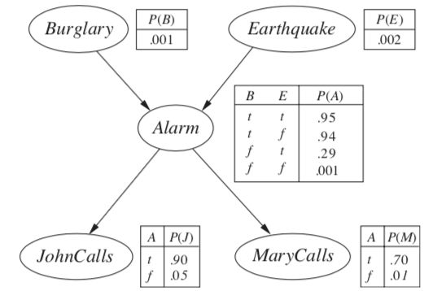
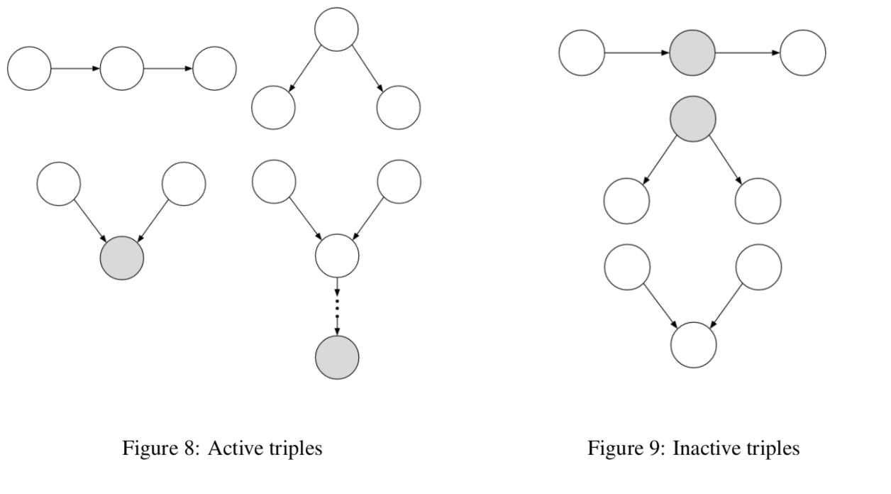
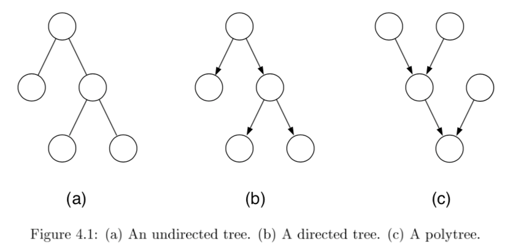

4.2. graphical models#
4.2.1. overview#
network types
bayesian networks - directed
undirected models
latent variable types
mixture models - discrete latent variable
factor analysis models - continuous latent variable
graph representation: missing edges specify independence (converse is not true)
encode conditional independence relationships
helpful for inference
compact representation of joint prob. distr. over the variables

dark is observed for HMMs, for other things unclear what it means
4.2.2. bayesian networks - R & N 14.1-5 + J 2#
examples
causal model: causes \(\to\) symptoms
diagnostic model: symptoms \(\to\) causes
generally requires more dependencies
learning
expert-designed
data-driven
properties
each node is random variable
weights as tables of conditional probabilities for all possibilities
represented by directed acyclic graph
joint distr: \(P(X_1 = x_1,...X_n=x_n)=\prod_{i=1}^n P[X_i = x_i \vert Parents(X_i)]\)
markov condition: given parents, node is conditionally independent of its non-descendants
marginally, they can still be dependent (e.g. explaining away)
given its markov blanket (parents, children, and children’s parents), a node is independent of all other nodes
BN has no redundancy \(\implies\) no chance for inconsistency
forming a BN: keep adding nodes, and only previous nodes are allowed to be parents of new nodes
4.2.2.1. hybrid BN (both continuous & discrete vars)#
for continuous variables can sometimes discretize
linear Gaussian - for continuous children
parents all discrete \(\implies\) conditional Gaussian - multivariate Gaussian given assignment to discrete variables
parents all continuous \(\implies\) multivariate Gaussian over all the variables, and a multivariate posterior distribution (given any evidence)
parents some discrete, some continuous
h is continuous, s is discrete; a, b, \(\sigma\) all change when s changes
\(P(c|h,s) = N(a \cdot h + b, \sigma^2)\), so mean is linear function of h
discrete children (continuous parents)
probit distr - \(P(buys|Cost=c) = \phi[(\mu - c)/\sigma]\) - integral of standard normal distr - like a soft threshold
logit distr. - \(P(buys|Cost=c) =s\left(\frac{-2 (\mu - c)}\sigma \right)\) - logistic function (sigmoid s) produces thresh
4.2.2.2. exact inference#
given assignment to evidence variables E, find probs of query variables X
other variables are hidden variables H
enumeration - just try summing over all hidden variables
\(P(X|e) = \alpha P(X, e) = \alpha \sum_h P(X, e, h)\)
\(\alpha\) can be calculated as \(1 / \sum_x P(x, e)\)
\(O(n \cdot 2^n)\)
one summation for each of n variables
ENUMERATION-ASK evaluates in depth-first order: \(O(2^n)\)
we removed the factor of n
variable elimination - dynamic programming (see elimination)

\(P(B|j, m) = \alpha \underbrace{P(B)}_{f_1(B)} \sum_e \underbrace{P(e)}_{f_2(E)} \sum_a \underbrace{P(a|B,e)}_{f_3(A, B, E)} \underbrace{P(j|a)}_{f_4(A)} \underbrace{P(m|a)}_{f_5(A)}\)
calculate factors in reverse order (bottom-up)
each factor is a vector with num entries = \(\prod\) |num_elements| * |num_values|
when we multiply them, pointwise products
ordering
any ordering works, some are more efficient
every variable that is not an ancestor of a query variable or evidence variable is irrelevant to the query
complexity depends on largest factor formed
clustering algorithms = join tree algorithms (see propagation factor graphs)
join individual nodes in such a way that resulting network is a polytree

polytree=singly-connected network - only 1 undirected paths between any 2 nodes
time and space complexity of exact inference is linear in the size of the network
holds even if the number of parents of each node is bounded by a constant
can compute posterior probabilities in \(O(n)\)
however, conditional probability tables may still be exponentially large
4.2.2.3. approximate inferences in BNs#
randomized sampling algorithms = monte carlo algorithms
direct sampling methods:
simplest - sample network in topological order
rejection sampling - sample in order and stop once evidence is violated
want P(D|A)
sample N times, throw out samples where A is false
return probability of D being true
this is slow
likelihood weighting - fix evidence to be more efficient
generating a sample
fix our evidence variables to their observed values, then simulate the network
can’t just fix variables - distr. might be inconsistent
calculate W = prob of sample being generated
when we get to an evidence variable, multiply by prob it appears given its parents
for each observation
if positive, Count = Count + W
Total = Total + W
return Count/Total
this way we don’t have to throw out wrong samples
doesn’t solve all problems - evidence only influences the choice of downstream variables
Markov chain monte carlo - ex. Gibbs sampling, Metropolis-Hastings
fix evidence variables
sample a nonevidence variable \(X_i\) conditioned on the current values of its Markov blanket
repeatedly resample one-at-a-time in arbitrary order
why it works
the sampling process settles into a dynamic equilibrium where time spent in each state is proportional to its posterior probability
provided transition matrix q is ergodic - every state is reachable and there are no periodic cycles - only 1 steady-state soln
2 steps
create markov chain with write stationary distr.
draw samples by simulating the chain
methods
0th order methods - query density
metropolized random walk
ball walk
hit-and-run algorithm
1st order methods - uses gradient of the density
Gibbs: we have conditionals
metropolis adjusted langevin algorithm (MALA) = langevin monte carlo
use gradient to propose new states
accept / reject using metropolis-hastings algorithm
unadjusted langevin algorithm (ULA)
hamiltonian monte carlo (neal, 2011)
log-concave distr. density (analog of convexity)
\(\pi(x) = \frac{e^{-f(x)}}{\int e^{-f(y)}dy}\)
examples: normal distr., exponential distr., Laplace distr.
variational inference - formulate inference as optimization
minimize KL-divergence between observed samples and assumed distribution
the actual KL is hard to minimize so instead we maximize the ELBO, which is equivalent
do this over a class of possible distrs.
variational inference tends to be faster, but may not be as good as MCMC
4.2.2.4. conditional independence properties#
multiple, competing explanations (“explaining-away”)

in fact any descendant of the base of the v suffices for explaining away
d-separation = directed separation
Bayes ball algorithm - is \(( X_A \perp X_B )| X_C\)?
initialize
shade \(X_C\)
place ball at each of \(X_A\)
if any ball reaches \(X_B\), then not conditionally independent
rules
balls can’t pass through shaded unless shaded is at base of v
balls pass through unshaded unless unshaded is at base of v

4.2.3. undirected#
\(X_A \perp X_C | X_B\) if the set of nodes \(X_B\) separates the nodes \(X_A\) from \(X_C\)

can’t convert directed / undirected

factor over maximal cliques (largest sets of fully connected nodes)
potential function \(\psi_{X_C} (x_C)\) function on possible realizations \(x_C\) of the maximal clique \(X_C\)
non-negative, but not a probability (specifying conditional probs. doesn’t work)
commonly let these be exponential: \(\psi_{X_C} (x_C) = \exp(-f_C(x_C))\)
yields energy \(f(x) = \sum_C f_C(x_C)\)
yields Boltzmann distribution: \(p(x) = \frac{1}{Z} \exp (-f(x))\)
\(p(x) = \frac{1}{Z} \prod_{C \in Cliques} \psi_{X_C}(x_c)\)
\(Z = \sum_x \prod_{C \in Cliques} \psi_{X_C} (x_C)\)
reduced parameterizations - impose constraints on probability distributions (e.g. Gaussian)
if x is dependent on all its neighbors
Ising model - if x is binary
Potts model - x is multiclass
4.2.4. elimination - J 3#
the elimination algorithm is for probabilistic inference
want \(p(x_F|x_E)\) where E and F are disjoint
any var that is not ancestor of evidence or ancestor of query is irrelevant
here, let \(X_F\) be a single node
notation
define \(m_i (x_{S_i})\) = \(\sum_{x_i}\) where \(x_{S_i}\) are the variables, other than \(x_i\), that appear in the summand
define evidence potential \(\delta(x_i, \bar{x_i})\) is defined as \(x_i == \bar{x_i}\)
then $\(g(\bar{x_i}) = \sum_{x_i} \delta (x_i, \bar{x_i})\)$
for a set \(\delta (x_E, \bar{x_E}) = \prod_{i \in E} \delta (x_i, \bar{x_i})\)
lets us define \(p(x, \bar{x}_E) = p^E(x) = p(x) \delta (x_E, \bar{x_E})\)
undirected graphs
\(\psi_i^E(x_i) \triangleq \psi_i(x_i) \delta(x_i, \bar{x}_i)\)
this lets us write \(p^E (x) = \frac{1}{Z} \prod_{c\in C} \psi^E_{X_c} (x_c)\)
can ignore z since this is unnormalized anyway
to find conditional probability, divide by all sum of \(p^E(x)\) for all values of E
in actuality don’t compute the product, just take the correct slice
eliminate algorithm
initialize: choose an ordering with query last
evidence: set evidence vars to their values
update: loop over element \(x_i\) in ordering
let \(\phi_i(x_{T_i})\) be product of all potentials involving \(x_i\)
sum over the product of these potentials \(m_i(x_{S_i}) = \sum_x \phi_i(x_{T_i})\)
normalize: \(p(x_F|\bar{x}_E) = \phi_F(x_F) / \sum_{x_F} \phi_F (x_F)\)
undirected graph elimination algorithm
for directed graph, first moralize
for each node connect its parents
drop edges orientation
for each node X
connect all remaining neighbors of X
remove X from graph
reconstituted graph - same nodes, includes all edges that were added
elimination cliques - includes X and its neighbors when X is removed
computational complexity is the exponential in the number of variables in the elimination clique
involves treewidth - one less than smallest achievable value of cardinality of largest elimination clique
range over all possible elimination orderings
NP-hard to find elimination ordering that achieves the treewidth
4.2.5. propagation factor graphs - J 4#
tree - undirected graph in which there is exactly one path between any pair of nodes
if directed, then moralized graph should be a tree
polytree - directed graph that reduces to an undirected tree if we convert each directed edge to an undirected edge

- \[p(x) = \frac{1}{Z} \left[ \prod_{i \in V} \psi (x_i) \prod_{(i,j)\in E} \psi (x_i,x_j) \right]\]
for directed, root has individual prob and others are conditionals
can once again use evidence potentials for conditioning
4.2.5.1. probabilistic inference on trees#
eliminate algorithm through message-passing
ordering I should be depth-first traversal of tree with f as root and all edges pointing away
message \(m_{ji}(x_i)\) from \(j\) to \(i\) =intermediate factor
2 key equations
\(m_{ji}(x_i) = \sum_{x_j} \left( \psi^E (x_j) \psi (x_i, x_j) \prod_{k \in N(j) \backslash i} m_{kj} (x_j) \right)\)
\(p(x_f | \bar{x}_E) \propto \psi^E (x_f) \prod_{e \in N(f)} m_{ef} (x_f) \)
sum-product = belief propagation - inference algorithm
computes all single-node marginals (for certain classes of graphs) rather than only a single marginal
only works in trees or tree-like graphs


message-passing protocol - a node can send a message to a neighboring node when, and only when, it has received messages from all of its other neighbors (parallel algorithm)
evidence(E)
choose root
collect: send messages evidence to root
distribute: send messages root back out


4.2.5.2. factor graphs#
factor graphs capture factorizations, not conditional independence statements
ex \(\psi (x_1, x_2, x_3) = f_a(x_1,x_2) f_b(x_2,x_3) f_c (x_1,x_3)\) factors but has no conditional independence
- \[f(x_1,...,x_n) = \prod_s f_s (x_{C_s})\]
neighborhood N(s) for a factor index s is all the variables the factor references
neighborhood N(i) for a node i is set of factors that reference \(x_i\)
provide more fine-grained representation of prob. distr.
could add more nodes to normal graphical model to do this
factor tree - if factors are made nodes, resulting undirected graph is tree
two kinds of messages (variable-> factor & factor-> variable)
run all the factor \(\to\) variables first

- \[p(x_i) \propto \prod_{s \in N(i)} \mu_{si} (x_i)\]
if a graph is originally a tree, there is little to be gained from factor graph framework
sometimes factor graph is factor tree, but original graph is not

4.2.5.3. maximum a posteriori (MAP)#
want \(\max_{x_F} p(x_F | \bar{x}_E)\)
MAP-eliminate algorithm is very similar to before
initialize - choose ordering
evidence - set evidence
update - for each take max over variable and make new factor
maximum - marginalize
products of probs tend to underflow, so take \(\max_x \log p^E (x)\)
can also derive a max-product algorithm for trees
find \(\text{argmax}_x p^E (x)\)
can solve by keeping track of maximizing values of variables in max-product algorithm
4.2.6. dynamic bayesian nets#
dynamic bayesian nets - represents a temporal prob. model
4.2.6.1. state space model#
state space model

\(P(X_{0:t}, E_{1:t}) = P(X_0) \prod_{i} \underbrace{P(X_i | X_{i-1}) }_{\text{transition model}} \: \underbrace{P(E_i|X_i)}_{\text{sensor model}}\)
agent maintains belief state of state variables \(X_t\) given evidence variables \(E_t\)
improve accuracy
increase order of Markov transition model
increase set of state variables (can be equivalent to 1)
hard to maintain state variables over time, want more sensors
4 inference problems (here \(\cdot\) is elementwise multiplication)
filtering = state estimation - compute \(P(X_t | e_{1:t})\)
recursive estimation: $\(\underbrace{P(X_{t+1}|e_{1:t+1})}_{\text{new state}} = \alpha \: \underbrace{P(e_{t+1}|X_{t+1})}_{\text{sensor}} \cdot \underset{x_t}{\sum} \: \underbrace{P(X_{t+1}|x_t)}_{\text{transition}} \cdot \underbrace{P(x_t|e_{1:t})}_{\text{old state}}\)\( where \)\alpha$ normalizes probs
prediction - compute \(P(X_{t+k}|e_{1:t})\) for \(k>0\)
\(\underbrace{P(X_{t+k+1} |e_{1:t})}_{\text{new state}} = \sum_{x_{t+k}} \underbrace{P(X_{t+k+1} |x_{t+k})}_{\text{transition}} \cdot \underbrace{P(x_{t+k} |e_{1:t})}_{\text{old state}}\)
smoothing - compute \(P(X_{k}|e_{1:t})\) for \(0 < k < t\)
2 components \(P(X_k|e_{1:t}) = \alpha \underbrace{P(X_k|e_{1:k})}_{\text{forward}} \cdot \underbrace{P(e_{k+1:t}|X_k)}_{\text{backward}}\)
forward pass: filtering from \(1:t\) 2. backward pass from \(t:1\) \(\underbrace{P(e_{k+1:t}|X_k)}_{\text{sensor past k}} = \sum_{x_{k+1}} \underbrace{P(e_{k+1}|x_{k+1})}_{\text{sensor}} \cdot \underbrace{P(e_{k+2:t}|x_{k+1})}_{\text{recursive call}} \cdot \underbrace{P(x_{k+1}|X_k)}_{\text{transition}}\) 3. this is called the forward-backward algo(also there is a separate algorithm that doesn’t use the observations on the backward pass)
most likely explanation - \(\underset{x_{1:t}}{\text{argmax}}\:P(x_{1:t}|e_{1:t})\)
Viterbi algorithm: \(\underbrace{\underset{x_{1:t}}{\text{max}} \: P(x_{1:t}, X_{t+1}|e_{1:t+1})}_{\text{mle x}} = \alpha \: \underbrace{P(e_{t+1}|X_{t+1})}_{\text{sensor}} \cdot \underset{x_t}{\text{max}} \left[ \: \underbrace{P(X_{t+1}|x_t)}_{\text{transition}} \cdot \underbrace{\underset{x_{1:t-1}}{\text{max}} \:P(x_{1:t-1}, x_{t+1}|e_{1:t})}_{\text{max prev state}} \right]\)
complexity
K = number of states
M = number of observations
n = length of sequence
memory - \(nK\)
runtime - \(O(nK^2)\)
learning - form of EM
basically just count (maximizing joint likelihood of input and output)
initial state probs \(\frac{count(start \to s)}{n}\)
\(P(x'|x) = \frac{count(s \to s')}{count(s)}\)
\(P(y|x) = \frac{count (x \to y)}{count(x)}\)
4.2.6.2. hmm#
state is a single discrete process
transitions are all matrices (and no zeros in sensor model)\(\implies\) forward pass is invertible so can use constant space
online smoothing (with lag)
ex. robot localization
4.2.6.3. kalman filtering#
state is continuous
ex.

type of nodes (real-valued vectors) and prob model (linear-Gaussian) changes from HMM
1d example: random walk
state nodes: \(x_{t+1} = Ax_t + Gw_t\)
output nodes: \(y_t = Cx_t+v_t\)
x is linear Gaussian
w is noise Gaussian
y is linear Gaussian
doing the integral for prediction involves completing the square
properties
new mean is weighted mean of new observation and old mean
update rule for variance is independent of the observation
variance converges quickly to fixed value that depends only on \(\sigma^2_x, \sigma^2_z\)
Lyapunov eqn: evolution of variance of states
information filter - mathematically the same but different parameterization
extended Kalman filter
works on nonlinear systems
locally linear
switching Kalman filter - multiple Kalman filters run in parallel and weighted sum of predictions is used
ex. one for straight flight, one for sharp left turns, one for sharp right turns
equivalent to adding discrete “maneuver” state variable
4.2.6.4. general dbns#
can be better to decompose state variable into multiple vars
reduces size of transition matrix
transient failure model - allows probability of sensor giving wrong value
persistent failure model - additional variable describing status of battery meter
exact inference - våariable elimination mimics recursive filtering
still difficult
approximate inference - modification of likelihood weighting
use samples as approximate representation of current state distr.
particle filtering - focus set of samples on high-prob regions of the state space
consistent
sample a state
sample the next state given the previous state
weight each sample by \(P(e_t | x_t)\)
resample based on weight
4.2.7. structure learning#
conditional correlation - inverse covariance matrix = precision matrix
estimates only good when \(n >> p\)
eigenvalues are not well-approximated
often enforce sparsity
ex. threshold each value in the cov matrix (set to 0 unless greater than thresh) - this threshold can depend on different things
can also use regularization to enforce sparsity
POET doesn’t assume sparsity